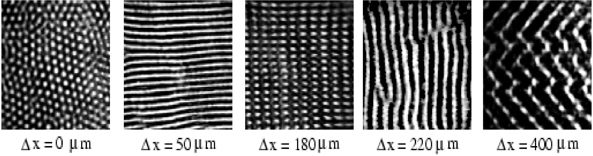

Pattern formation in nonlinear optics
Pattern
formation is a fascinating process and a great source of scientific
research. One of the father of this scientific discipline was Sir
D'Arcy Thompson, a Scottish biologist and mathematician who wrote an
original and influential book dealing with structure forming in living
organisms ("On growth and Form", 1917).
My interest for pattern formation is more oriented towards physical
systems like liquids and optical devices. In the figure below, you can
see the results of experiments with lasers where you see that the plane
wave destabilize and fall in five different kind of new patterns. The
bifurcation parameter (Delta x) is related to the spatial displacement
in the feedback loop of a nonlinear interferometer. Details of the
experimental setup may be found in this reference (Phys. Rev. A, 54, 3472, 1996).
